The collection
The works as they survive
Ninety-two works in our care, from finished paintings to the studies, drawings and painted postcards behind them. Filter by artist or by kind of work, and open any piece to see it whole, with its wall label and its story.
In the house
Works in our care
Every work here can be seen in person. Write to us and we will set a quiet room aside, with the work, its record and a condition report ready for you.
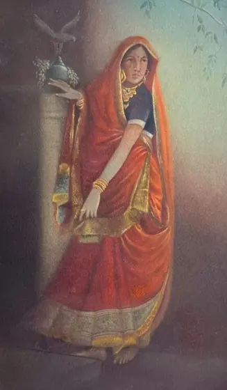
Damayanti
Wash painting
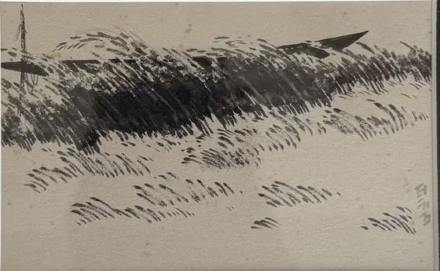
Grasses in the Wind
Ink on paper
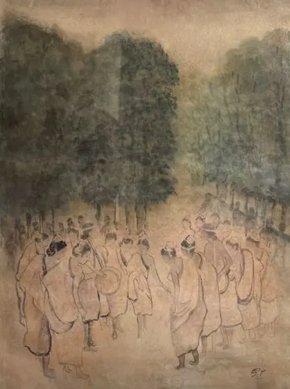
Santhal Dance
Watercolour
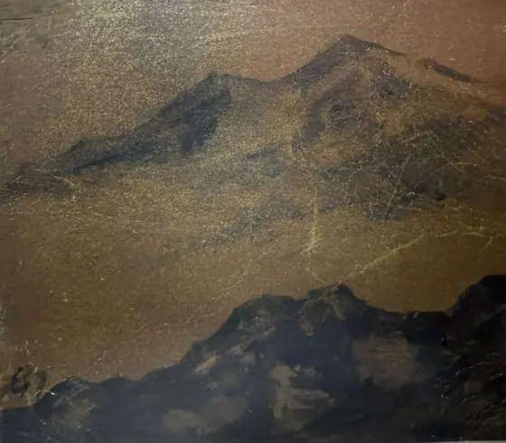
Mountain Study
Watercolour on gilded paper
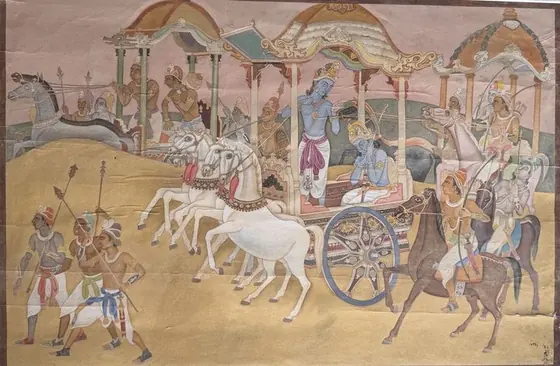
Krishna and Arjuna
Watercolour on paper
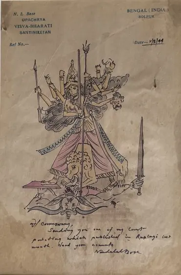
Durga
Ink and watercolour on paper
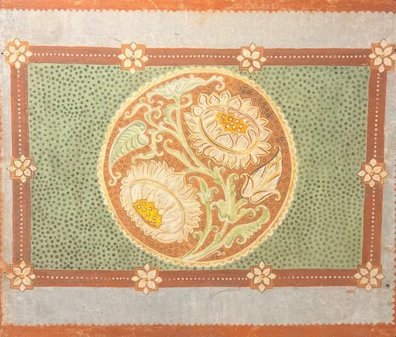
Floral Medallion
Tempera on board
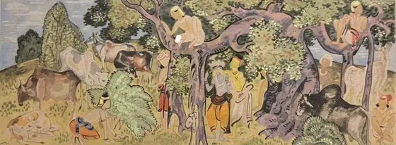
Krishna with the Herd
Watercolour
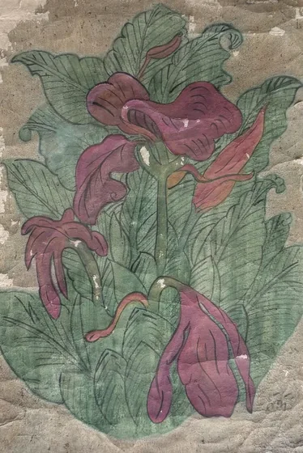
Lilies
Watercolour on paper
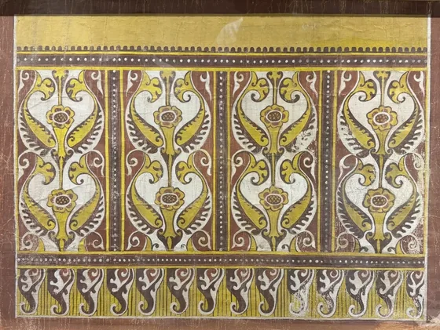
Ornamental Panel
Tempera on silk
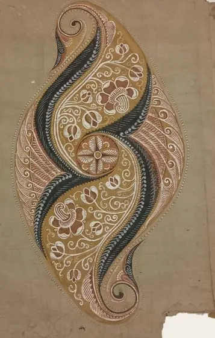
Paisley Study
Tempera on silk, laid on paper
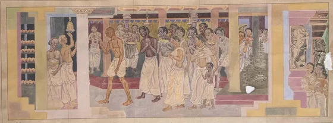
Procession to the Shrine
Watercolour on paper
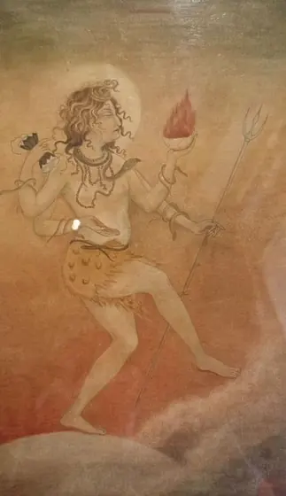
Shiva
Wash painting
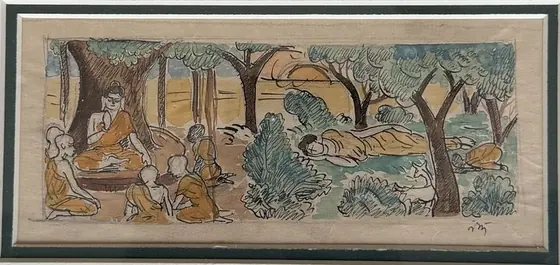
The Buddha in the Grove
Ink and watercolour
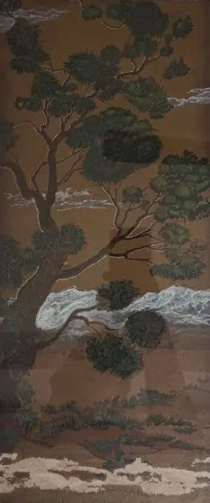
Tree and Clouds
Mixed media on paper
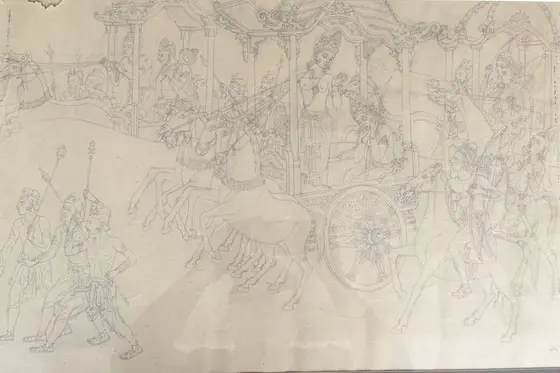
Krishna and Arjuna, First Study
Pencil on paper
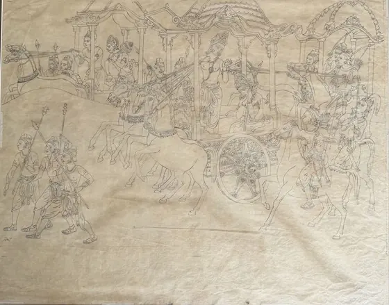
Krishna and Arjuna, Second Study
Pencil on paper
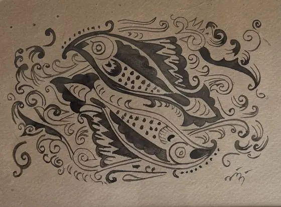
Fish
Ink on paper
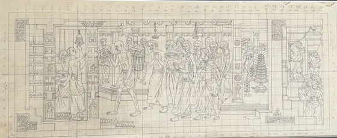
Procession, Squared Study
Pencil on paper
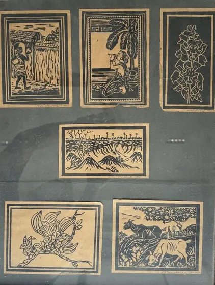
Six Vignettes
Ink on paper (set of six)
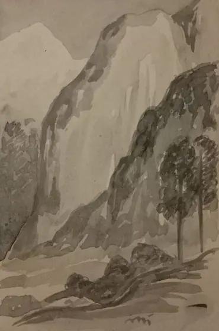
Cliff and Pines
Postcard 01 of 14
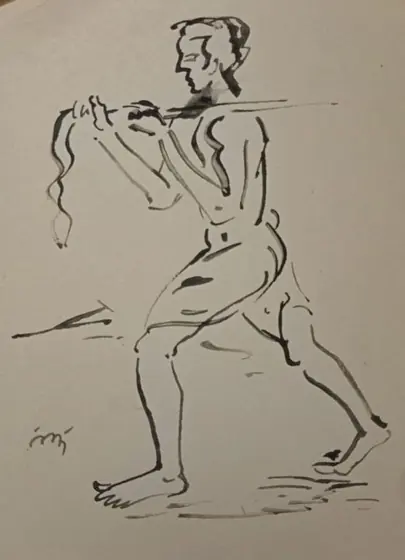
Man with a Pole
Postcard 02 of 14
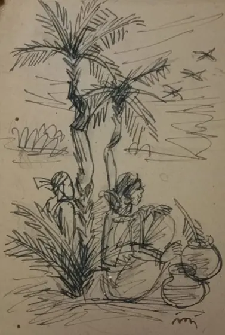
Under the Palms
Postcard 03 of 14
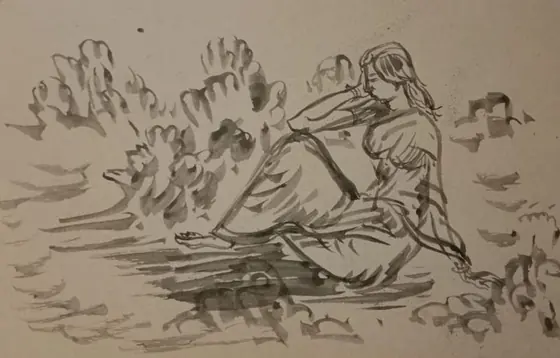
Seated Woman
Postcard 04 of 14
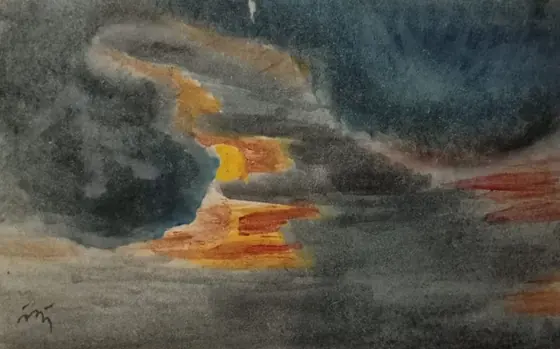
Evening Sky
Postcard 05 of 14
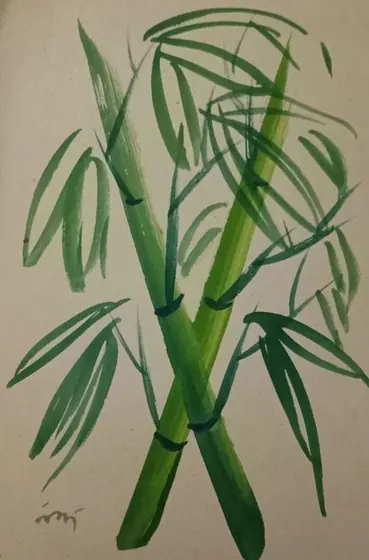
Bamboo
Postcard 06 of 14
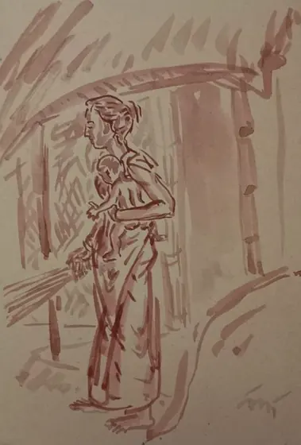
Mother and Child
Postcard 07 of 14
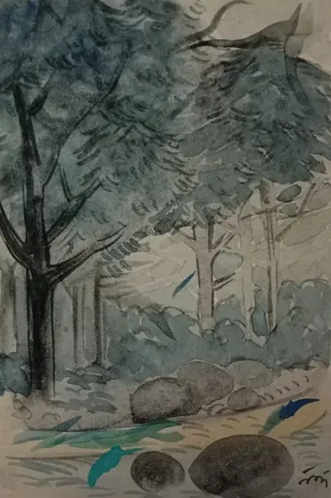
Forest Clearing
Postcard 08 of 14
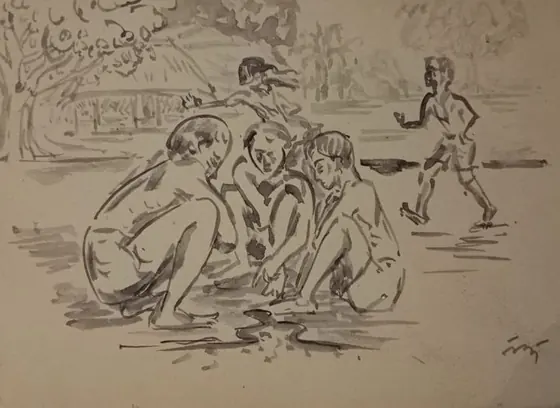
Children at Play
Postcard 09 of 14
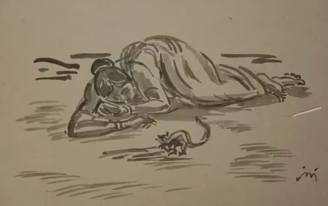
Afternoon Sleep
Postcard 10 of 14
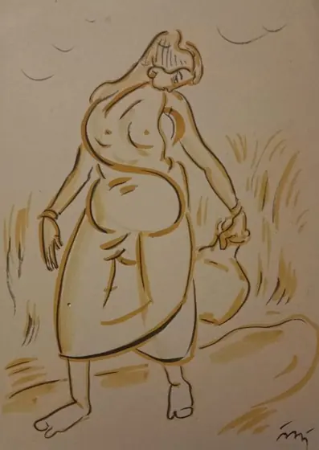
The Bather
Postcard 11 of 14
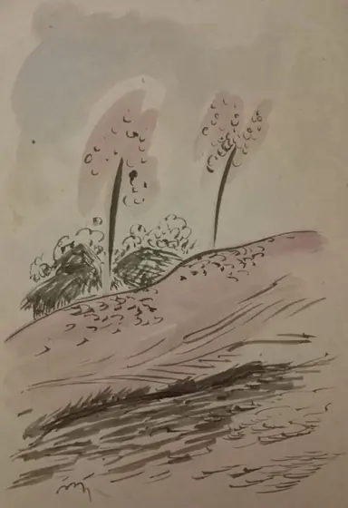
Two Trees on a Hill
Postcard 12 of 14
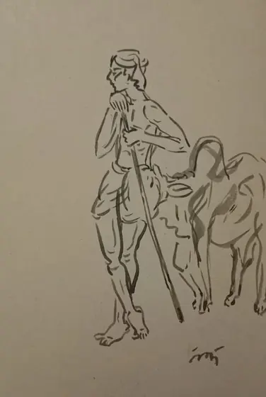
Cowherd
Postcard 13 of 14
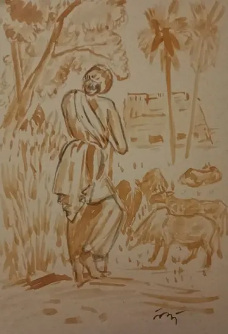
The Village Path
Postcard 14 of 14
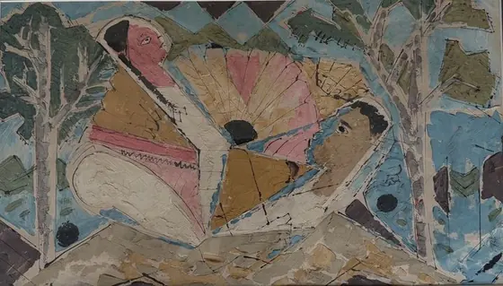
Figures with a Fan
Mixed media on paper
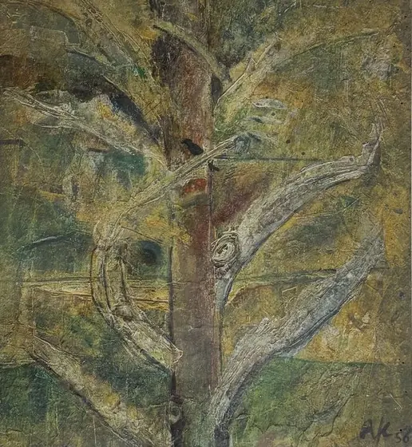
The Tree
Oil on board
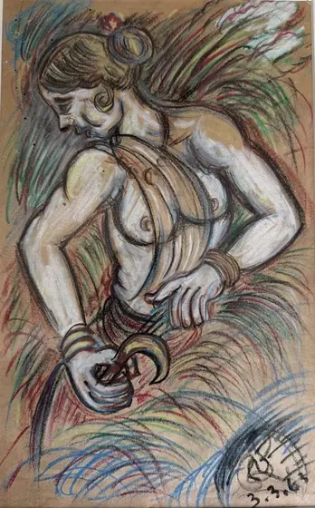
Harvest
Mixed media on paper
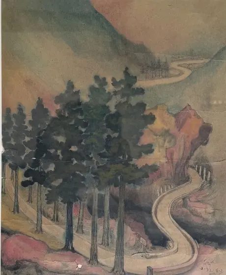
Mountain Road
Watercolour on paper
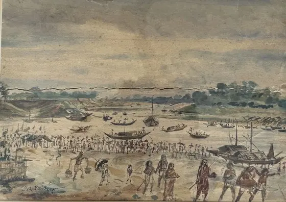
On the Riverbank
Watercolour on paper
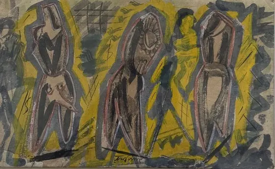
Three Figures
Watercolour on paper
Woman with a Flower
Mixed media (dry pastel) on paper
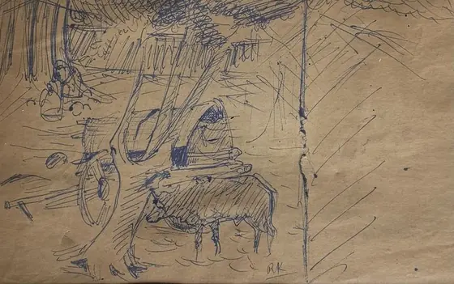
Bullock Cart
Ink on paper
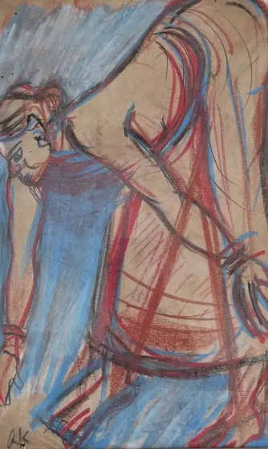
Drawing Water
Dry pastel on paper
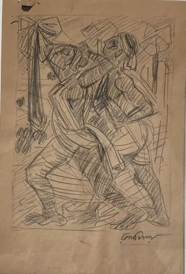
Figure in Motion
Pencil on paper
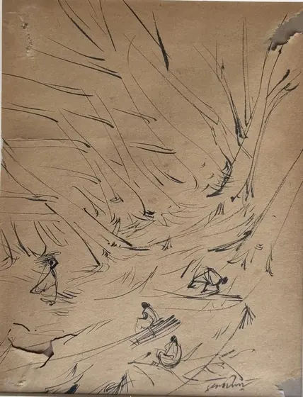
Gatherers
Pencil on paper
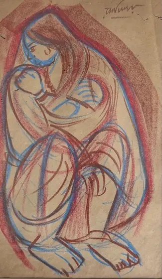
Mother and Child
Dry pastel on paper
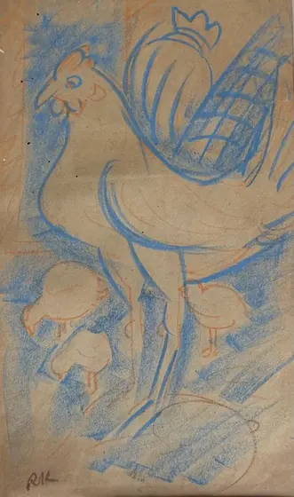
Rooster with Chicks
Dry pastel on paper
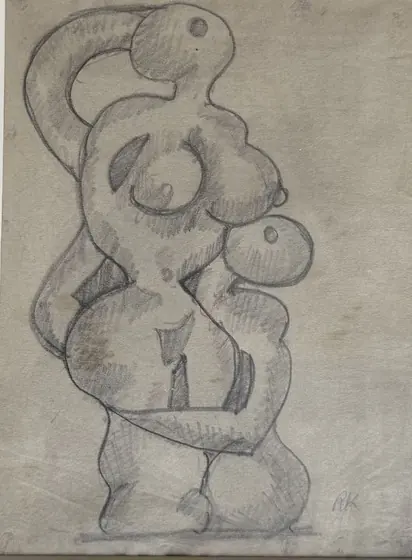
Study for a Sculpture
Pencil on paper
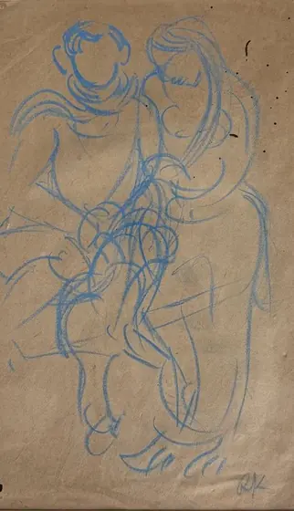
The Couple
Dry pastel on paper
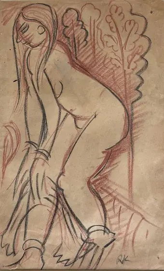
Woman by a Tree
Dry pastel on paper
Sunset over the River
Oil on canvas pasted on board
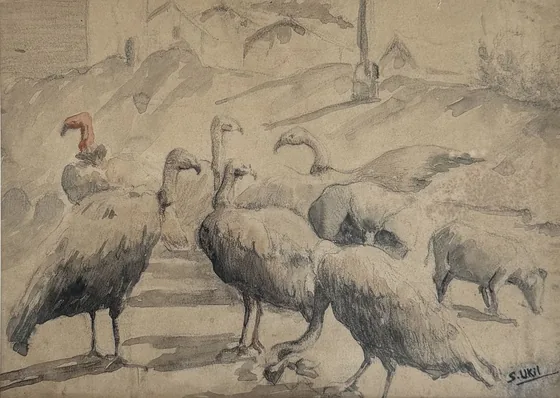
Vultures
Ink and watercolour on paper
The Ascetic
Mixed media on paper
The Vina Player
Gouache on paper
Portrait of a Young Woman
Pastel on paper
Rain on the Avenue
Watercolour on paper
Among the Lilies
Watercolour on paper
The Swing
Oil on canvas
White Bird
Pastel on paper
Crows
Watercolour
Boats at Dusk
Watercolour on paper
The Overthrow
Ink on paper
Riverside Cottages
Gouache on paper
Himalayan Evening
Tempera on cardboard
Untitled
Watercolour postcard
Untitled
Watercolour postcard
Untitled
Watercolour postcard
Untitled
Watercolour postcard
Untitled
Watercolour postcard
Untitled
Watercolour postcard
Untitled
Watercolour postcard
Untitled
Watercolour postcard
Untitled
Watercolour postcard
Simla in Snow
Watercolour on paper
On the Swing
Pencil, charcoal and watercolour on paper
Portrait of a Woman
Charcoal and pencil
The Garden Path
Watercolour on paper
The Pavilion
Watercolour on paper
The Riverbank
Oil on canvas
The Hay Cart
Oil on canvas
The Banyan
Oil on canvas
Village Lane
Oil on canvas
Divine Love
Gouache on paper
Untitled
Bronze
Untitled (Figure)
Bronze on a wooden base
Untitled (Reclining Forms)
Bronze
Untitled (Winged Form)
Bronze on a wooden base
Untitled
Ink on paper
Untitled (Head of a Woman)
Painted and patinated bronze
Yashoda and Krishna
Oil on canvas
Women in a Courtyard
Gouache and watercolour on paper
Steamers on the River
Pencil on paper
Nothing matches that yet.
How we show a work
Every work keeps its story
A painting by one of these masters is also a document. Who made it, where it has been, who kept it and why: all of that travels with it.
A work in your family
Has your family kept one of these works?
Many of these works have stayed in families for generations. We would be honoured to learn their stories, with no obligation of any kind.